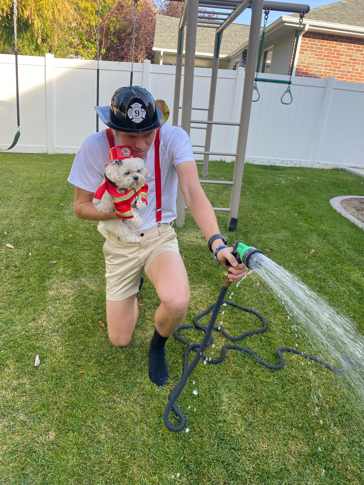
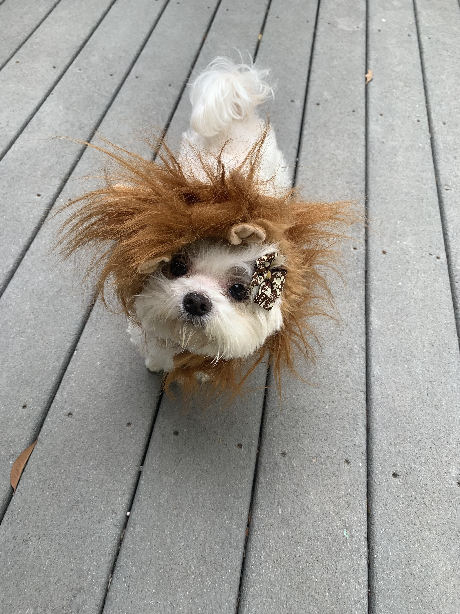
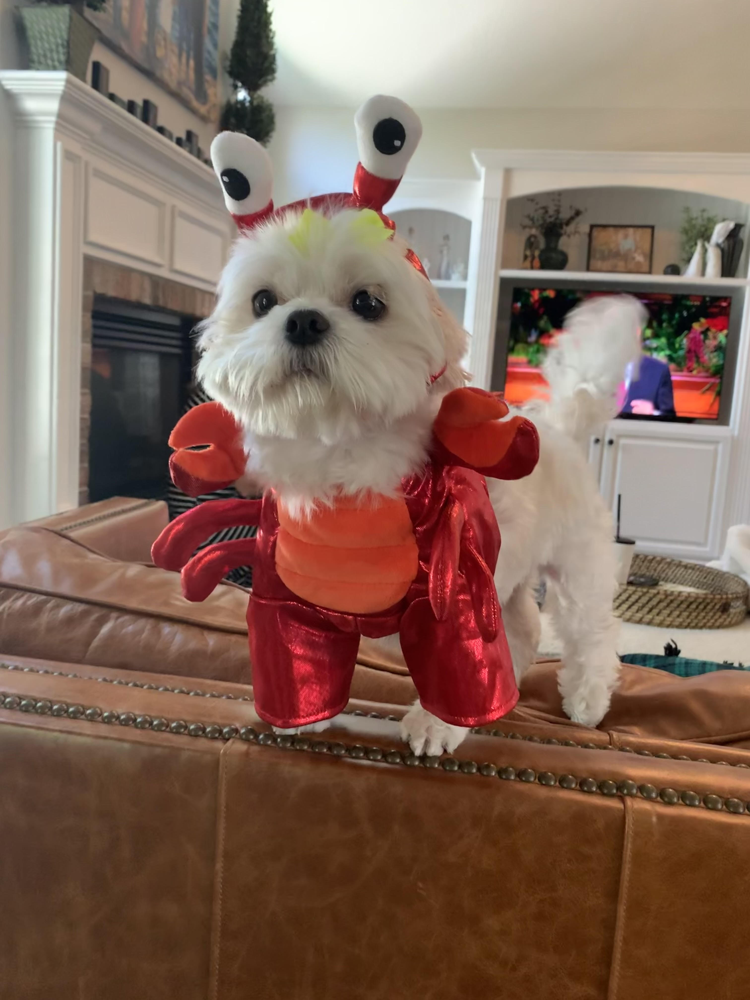

FireWomen Floof
FireWomen Floof is an amazing spectical to see. She has the strength of Hercules, the mind of a philosopher, and the courage of a young warrior. Not only does a floof save the day, but she looks stylish while doing it. It is no wonder everybody is in awe of her floofiness. Below are some actions shots of a floof when on the job saving lives. Be weary, they aren't for the faint hearted...
 "To save lives and make the world a better place - that’s what living is all about"
The Lioness
The Lioness is easily the most feared Floof around the globe. Her razor sharp teeth along side her piercing claws give way to a whole new meaning of savage. During her down time, a Floof takes part in saving those who are being poached in the safari's of Africa. In her time, she has successfully reduced the poaching percentage by 100% due to her all-time ravening ferociousness! Nowadays, nobody dares test her. Below is an image captured by an enemy, right before she went for the jugular.
Fear may be struck into those who glace upon The Lioness
 "RAAAAWWWWWRRRRRRRRR"Witch Floof
The WitchFloof is a smart and cunning witch that is only seen Hallow's Eve. It is believed that she haunts those who love the taste of candy. WitchFloof has been known to strike fear into the eyes of young little boys, making them cry. While young girls often mistake WitchFloof for a cute pup, you must remember that she is a master of potions and spells. Only those who have survived an attack from The WitchFloof have lived to tell the tale. Below are speculated images of the form in which the WitchFloof takes.
Those who glace upon the WitchFloof are subject to haunting...
"Oh little boys crying gives me so much joy!"Saving The Lobsters!
I am a savivor of the world dominator named "Stinky". He threatened our whole species with her signature move named "The Stinker". If it wasn't for LobsterFloof then we would have been wiped out! We are eternally grateful for LobtserFloof's courage and bravery to fight off the enemy. Below are some quotes from our community who have been branded the Number #1 LobsterFloofFans!
 "Lobster Floof is my Hero!""I wish I could be like her one day"
"She saved my whole family with one bite!"
"A True hero isn't measured by the size of her strength, but by the strength of her heart"
Become a member of our prestine club and click the link below!!!
As you have seen, a Floof is a true hero. There is nobody on this earth that can challenge her Floofiness.
To this day a Floof remains active in her heroic duties.